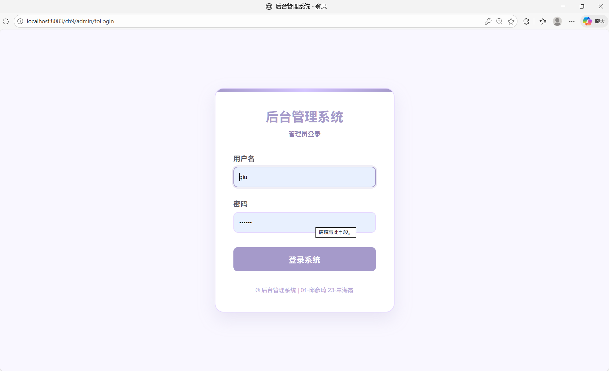
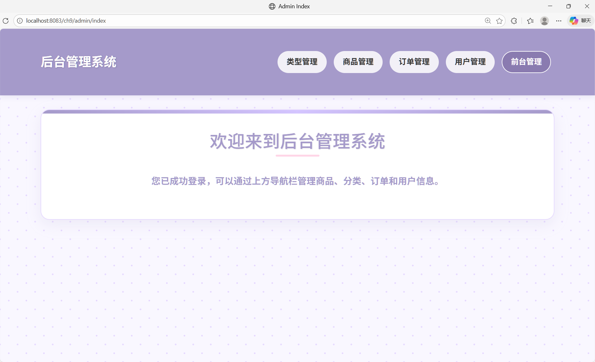
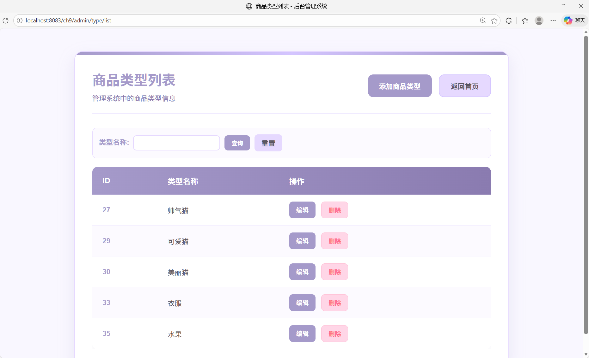
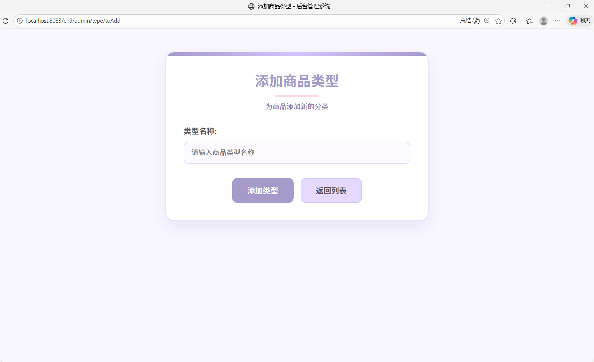
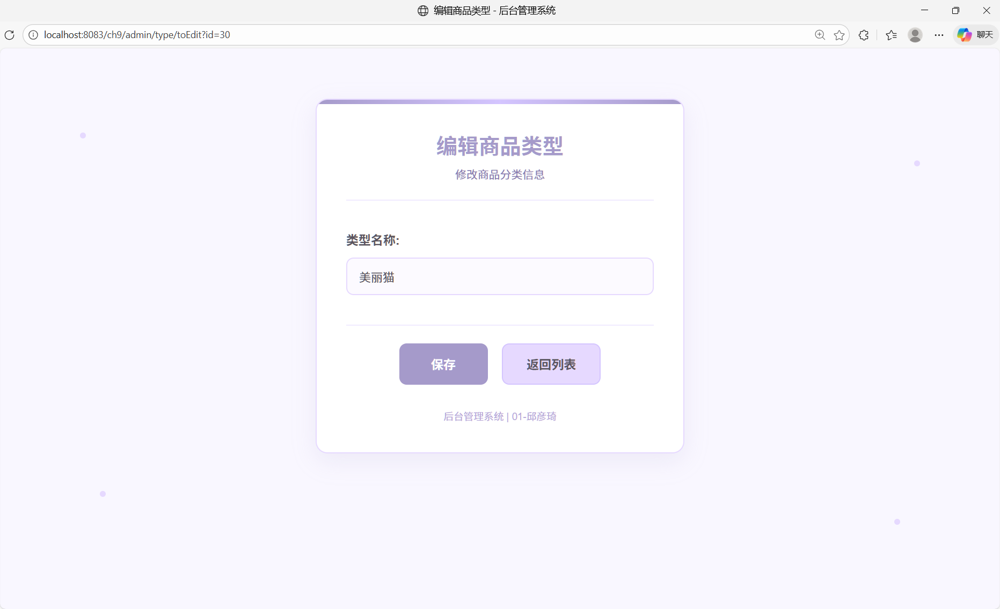
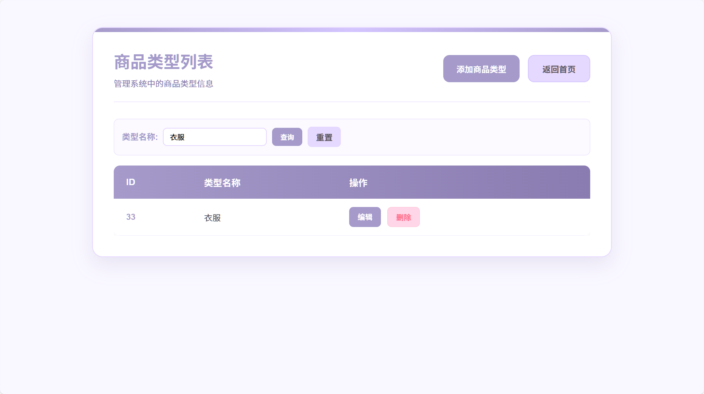

猫咪店铺一站式服务平台
Spring Boot 电商后台管理系统
研发视角
1. 项目概览
一句话定位
2人团队完成的电商平台，我负责后台开发，通过清晰的MVC分层架构和统一的权限控制，实现了商品、分类、订单、用户管理功能
时间周期：2025.05 - 2025.07
我的角色：后台开发
团队规模：2人团队（我负责后台）
2. 技术架构
系统架构
Controller层（控制器） → Service层（业务逻辑） → Repository/Mapper层（数据访问） → MySQL数据库
技术栈
框架：Spring Boot 2.7.18
ORM：MyBatis-Plus 3.4.3.4
模板引擎：Thymeleaf
数据库：MySQL 8.0.44
构建工具：Maven
代码结构
src/main/java/com/ch/ch9/
├── controller/admin/ # 后台控制器（5个）
│ ├── AdminBaseController.java # 基类-权限控制
│ ├── AdminController.java # 管理员登录
│ ├── GoodsController.java # 商品管理
│ ├── GoodsTypeController.java # 分类管理
│ ├── OrderController.java # 订单管理
│ └── UserController.java # 用户管理
├── service/admin/ # 后台业务层
├── repository/admin/ # 后台数据访问层
├── mapper/admin/ # MyBatis Mapper
└── entity/ # 实体类3. 功能模块
模块1：管理员登录与权限控制
通过@ModelAttribute注解，在所有后台方法执行前检查登录状态；Session中存储auser对象，未登录则抛出NoLoginException；白名单机制：登录页面和登录处理跳过检查
模块2：商品管理
商品列表（支持按名称搜索）、添加商品（含图片上传，双路径保存：src+target）、编辑商品、删除商品（同时删除图片文件+重置自增ID）
💡 技术亮点：图片上传双路径保存，既保证开发时立即生效，又保证重启后不丢失
模块3：商品分类管理
分类的增删改查，预设分类：家电、水果、文具、服装、鲜花
模块4：订单管理
订单列表（支持按用户ID筛选）、添加订单、编辑订单（可修改状态）、删除订单；订单状态：待付款、已付款、已发货、已完成、已取消
模块5：用户管理
前台用户的增删改查
4. 系统截图






5. 数据库设计
核心表结构
- ausertable：管理员表（id, aname, apwd）
- goodstypetable：商品分类表（id, typename）
- goodstable：商品表（id, gname, gprice, gstore, gpicture, goodstype_id）
- orderbasetable：订单主表（id, busertable_id, amount, order_date, status）
- orderdetail：订单详情表（id, orderbasetable_id, goodstable_id, shoppingnum）
- busertable：前台用户表（id, bemail, bpwd, userName）
6. 成果展示
功能成果
- ✅ 管理员登录与权限：Session验证，白名单机制
- ✅ 商品管理：CRUD+图片上传+级联删除
- ✅ 分类管理：CRUD
- ✅ 订单管理：CRUD+状态流转
- ✅ 用户管理：CRUD
技术亮点
- 权限控制基类：AdminBaseController统一处理登录验证
- 图片双路径保存：解决开发环境静态资源刷新问题
- MyBatis-Plus应用：简化CRUD操作，提升开发效率
- 事务管理：@Transactional注解保证数据一致性
🏆 完整后台管理系统，包含13个后台页面